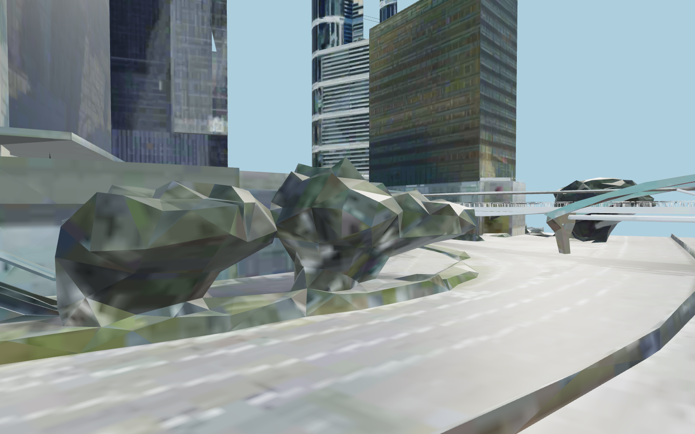
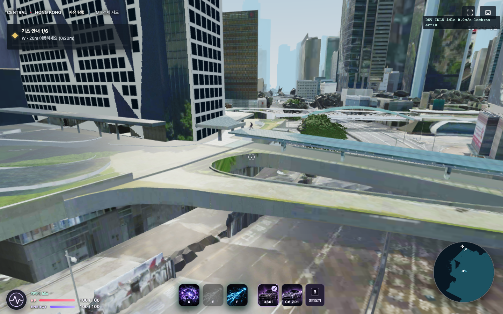
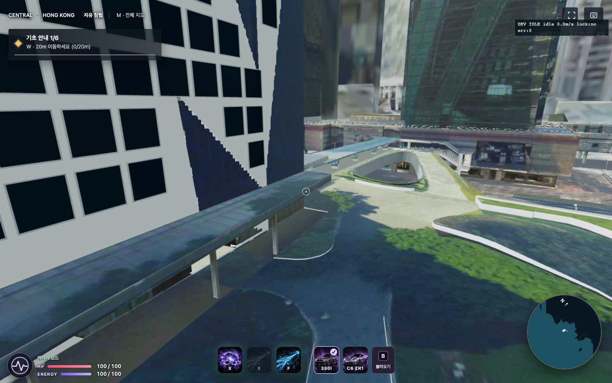
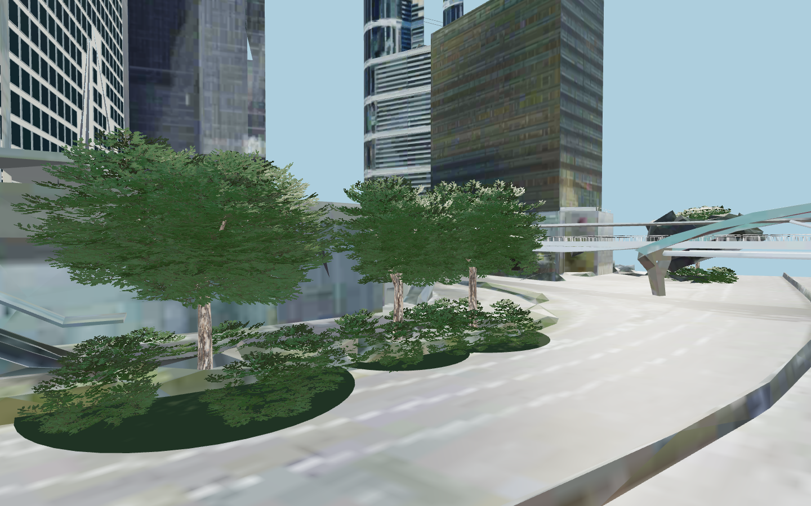
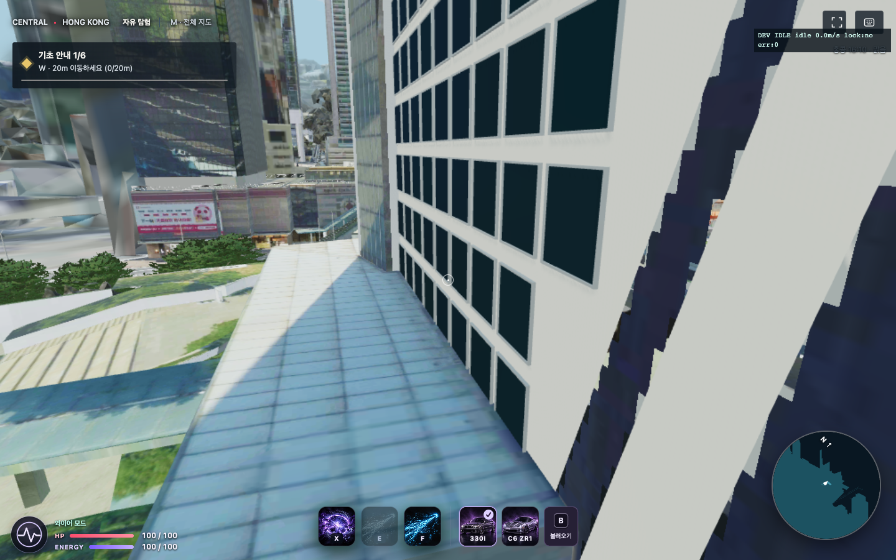
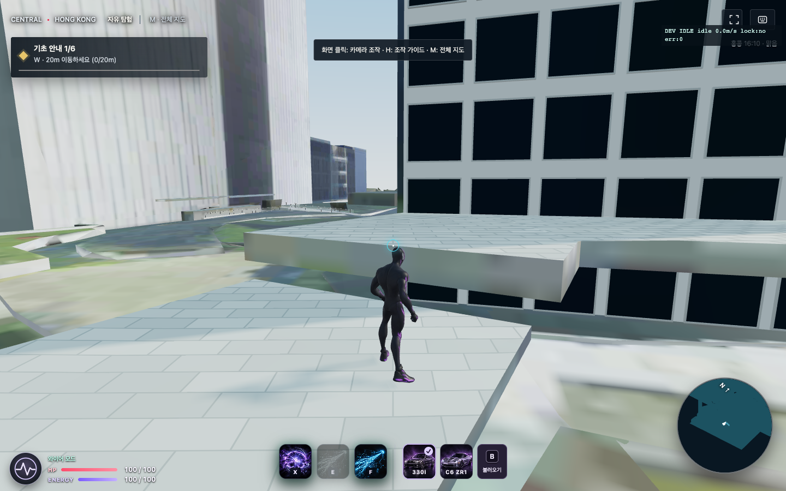

원본 형상 · 부분 보강 · LOD · 재질 · 지도와 충돌 경로를 나눠 기록했습니다. 아래 항목은 수정 완료 표시가 아닙니다.
확인된 근접 시점 8방향, 메시 인스턴스 433개, 텍스처 인스턴스 384개. 광역 49개 격자 중 47곳은 미방문이며, 산지 내부에 들어간 2개 카메라 화면은 결함 증거에서 제외했습니다.
HK-01 · P1 · 화면 확인원본 수목

나뭇잎·가지가 분리되지 않고 바위 같은 삼각형 덩어리로 보임. 원본/보강 A/B에서 직접 확인.
src/UrbanGroundCity.js:32; src/HongKongDistrict.js:10
플레이 가능한 수목 구역을 별도 수목 모델로 재구성하고 원본 캐노피를 정확한 경계로 교체. 광원이나 안티앨리어싱만으로 복구되지 않음.
HK-02 · P1 · 화면 확인보행교·난간·도로 접합

보행교 측면에 사진 무늬가 늘어나고 얇은 가장자리·난간의 형상이 뭉개짐. 접합부가 각진 면으로 남음.
src/UrbanGroundCity.js:32; src/TileTextures.js:1
가까이 접근하는 교량/난간/도로 경계를 실제 두께가 있는 분리 메시와 일관된 재질로 교체. 원본 충돌면과 함께 검증.
HK-03 · P1 · 화면 확인바닥·건물 텍스처

원본 벽면·바닥이 모자이크처럼 흐리고 얼룩/그림자가 사진에 붙어 있음. 일부 지붕·옆면은 무늬가 길게 늘어남.
src/TileTextures.js:1; src/HongKongRendering.js:56
텍셀 밀도와 UV 왜곡을 구역별 측정하고 근거리 PBR 재질로 교체. 이미 손실된 원본 디테일은 이방성 필터만으로 복구할 수 없음.
HK-04 · P1 · 화면 확인추가 외벽과 원본 경계
흰 창문 외벽이 원본 건물 전체를 덮지 않아 큰 대각선 패치·불연속 경계가 드러남. 마스크도 면당 256px의 이진 경계임. 마스크 해상도가 유일한 원인인지는 추가 A/B 필요.
src/HongKongDistrict.js:37; src/HongKongDistrictGeometry.js:5; src/data/HongKongFacades.js:1
외벽 전체 윤곽을 닫힌 모델로 다시 정의하고 창/기단/모서리까지 연결. 마스크와 교체 표면의 경계를 동시에 검증.
HK-05 · P1 · 코드·화면 확인보강 수목 적용 범위

교체 수목은 CENTRAL_TREES의 7개 고정 위치뿐. 다른 수목은 원본 메시 상태로 남음. 보강 후 A/B 화면에도 배경 원본 덩어리가 남음.
src/HongKongDistrict.js:10
수목 위치·캐노피·지면 높이를 관리하는 구역 단위 배치 데이터가 필요. 7곳 보강을 전체 수목 수정으로 취급하지 않음.
HK-06 · P1 · 코드·화면 확인보강 바닥 적용 범위
타일 무늬 보강은 x=-18~18, z=-14~18, y=19~22의 거의 수평인 시작 테라스에 한정됨. 주변 도로·곡면 보행로·계단은 원본 그대로임.
src/HongKongStartDistrict.js:5
도로/보도/계단/옥상별 표면 목록과 높이·경사 기준을 정하고 각 표면의 UV/재질을 별도 보강.
HK-07 · P1 · 측정 확인LOD와 메모리 압력

시작 구역 360도 회전 중 errorTarget이 10 → 15.625 → 17.756 → 20.177로 상승. 높은 값은 더 거친 모델을 허용함. 일부 시점은 다운로드가 진행 중이라 화면을 최종 LOD로 간주할 수 없음.
src/UrbanGroundCity.js:218; src/HongKongRendering.js:49; src/StreamingBudget.js:1
발밑과 근거리 대상에 최소 세밀도를 보장하면서 원거리/후방 요청을 줄이는 정책 필요. 정착 전/후와 이동 중 별도 비교.
HK-08 · P2 · 측정 확인보강 모델의 렌더 비용
시작 스캔에서 원본 지형 약 69,347 삼각형, 추가 외벽·수목 약 274,685 삼각형. 후자가 훨씬 큼. 근접 회전에서 총 호출은 98~238, 삼각형 약 49만~72만으로 측정. 이것만으로 특정 FPS 저하 원인을 확정하지는 않음.
src/HongKongDistrict.js:74; src/HongKongDistrict.js:162
창틀·수목에도 거리별 LOD/가시성 예산 적용. CPU/GPU 시간은 별도 프로파일링하여 실제 병목 확정.
HK-09 · P2 · 추가 재현 필요마스킹과 충돌 불일치
수목/외벽 원본을 fragment discard로 숨겨도 원본 충돌 삼각형은 유지됨. 모양이 달라진 위치에서 보이지 않는 충돌면 또는 시각적 틈이 생길 수 있음. 이번 조사에서 관통 위치를 확정한 항목은 아님.
src/HongKongDistrict.js:124; src/StreamedCollision.js:140
교체 구역별 렌더 메시와 충돌 메시 차이를 좌표로 비교하고 통행·벽 타기·카메라 접촉을 재현.
HK-10 · P2 · 추가 재현 필요캐노피 마스크 경계
원본 수목 제거는 고정 반경·높이와 abs(normal.y)<0.98 조건에 의존함. 원본의 평평한 조각이나 반경 밖 수목이 남을 수 있고, 같은 원통 안의 다른 시설도 영향을 받을 수 있음.
src/HongKongDistrict.js:149
수목 전용 분리 메시/폐곡면 마스크와 원본 요소별 제외 목록으로 검증. 광범위 원통 제거로 전체 지형을 자르지 않기.
HK-11 · P2 · 코드 확인·시각 영향 추가 측정낮밤·조명 재질 일관성

원본은 MeshBasicMaterial과 MeshStandardMaterial이 섞임. 밤에는 두 종류가 서로 다른 방식으로 어두워짐. 전체 사진 계층의 castShadow는 false라 원본 건물의 동적 그림자는 생성되지 않음. 사진에 찍힌 그림자도 별도로 남음.
src/HongKongRendering.js:74; src/WorldWeather.js:48; src/WorldWeather.js:81
같은 카메라·정착된 동일 LOD에서 재질별 주야 밝기, 사진 그림자, 보강 그림자를 비교. 근거리 교체 모델에만 동적 그림자를 단계적으로 적용.
HK-12 · P2 · 코드 확인·화면 영향 추가 측정미니맵 표현
미니맵은 원본 buildingMeshes 중심으로 재사용하고 35만 삼각형 예산을 넘는 메시를 통째로 제외함. 보강 그룹은 별도 루트라 메인 화면과 상세 표현이 같지 않을 수 있음. 이를 메인 화면의 지형 손상과 혼동하면 안 됨.
src/Minimap.js:12; src/Minimap.js:33
지도용 단순 프록시와 일정한 도로/건물 윤곽을 별도 준비하고 메인 지형의 가시성과 독립적으로 검증.